神经 scaling 的离散单元模型
Eric J. Michaud*、Ziming Liu、Uzay Girit 和 Max Tegmark
MIT 与 IAIFI
摘要
我们提出神经 scaling laws 的离散单元模型（Quantization Model），既解释观测到的 loss 随模型与数据规模按幂律下降的现象，也解释新能力随规模突然涌现的现象。我们从称为离散化假说（Quantization Hypothesis）的观点出发推导这一模型：网络的知识与技能被“离散化”为不可分割的块（quanta）。我们表明，当这些离散单元按使用频率递减的顺序被学会时，使用频率的幂律可以解释观测到的 loss 幂律扩展。我们在玩具数据集上验证这一预测，随后研究大型语言模型的 scaling 曲线如何分解。利用语言模型的 gradient，我们自动将模型行为分解为多样的技能（离散单元）。我们初步发现，这些离散单元在训练分布中被使用的频率大致遵循幂律，与语言模型的经验 scaling 指数对应，这正是我们理论的一个预测。2
1. 引言
总体而言，在更多数据上训练的更大神经网络，以可预测的方式优于在更少数据上训练的较小神经网络。一系列研究观察到，平均测试 loss 随网络参数数量（\(L\propto N^{-\alpha_N}\)）和训练样本数量（\(L\propto D^{-\alpha_D}\)）都按幂律下降 [1, 2, 3, 4, 5, 6, 7]。虽然整体性能随规模平滑变化，考察特定能力时，更大模型常出现涌现能力，即在定性上不同于小模型的表现 [8, 9]。理解并调和 scaling 的这两个侧面——可预测的 loss 幂律下降，以及新能力在一定规模下涌现——同时具有理论和实践意义 [10]。理解 scaling 如何改变神经网络所学的内容，与一些核心问题紧密相连：深度神经网络内部究竟在做什么，它们是否会随规模持续改善？
近期关于神经网络内部机制的研究，发现了通过 gradient descent 学会的多种出色算法 [11, 12, 13, 14, 15]。随着更多工作投入理解神经网络学到的结构（即机制可解释性的任务），我们或许会在模型中发现越来越多的 circuits [11, 16]，也就是可理解、在特定上下文中完成预测的内部算法。此类分析能否扩展到前沿模型 [17]？以下两个假设若成立，会让我们对从机制上理解大型模型更加乐观：（1）可分解性／模块化／稀疏性 [18, 19, 20, 21]：大型模型可以分解为多个部分，对任意给定样本，只有其中少数部分与模型行为相关；（2）普遍性 [22, 11, 23, 24]：相似结构在规模逐渐增大的模型中反复出现。近期，Olsson et al. [25] 发现了令人鼓舞的证据，表明 LLM 中的“induction heads”具有普遍性，并发现它们在训练过程中以离散转变的方式出现。
本文阐述离散化假说，即一组非形式化猜想：网络可分解为较小部分，不同模型规模执行的计算具有普遍性，模型学到的内容具有离散性，以及数据分布的性质如何产生神经 scaling 的幂律。特别地，我们假设，对许多预测问题，都存在某个可枚举、由不可分割知识或技能组成的集合，模型必须学会其中元素，而模型性能由它成功学会哪些元素决定。我们将这些构成模型性能的基本积木称为离散单元（quanta）。（本段接原文第 2 页。）
2项目代码：https://github.com/ejmichaud/quantization-model。
第 37 届神经信息处理系统会议（NeurIPS 2023）。
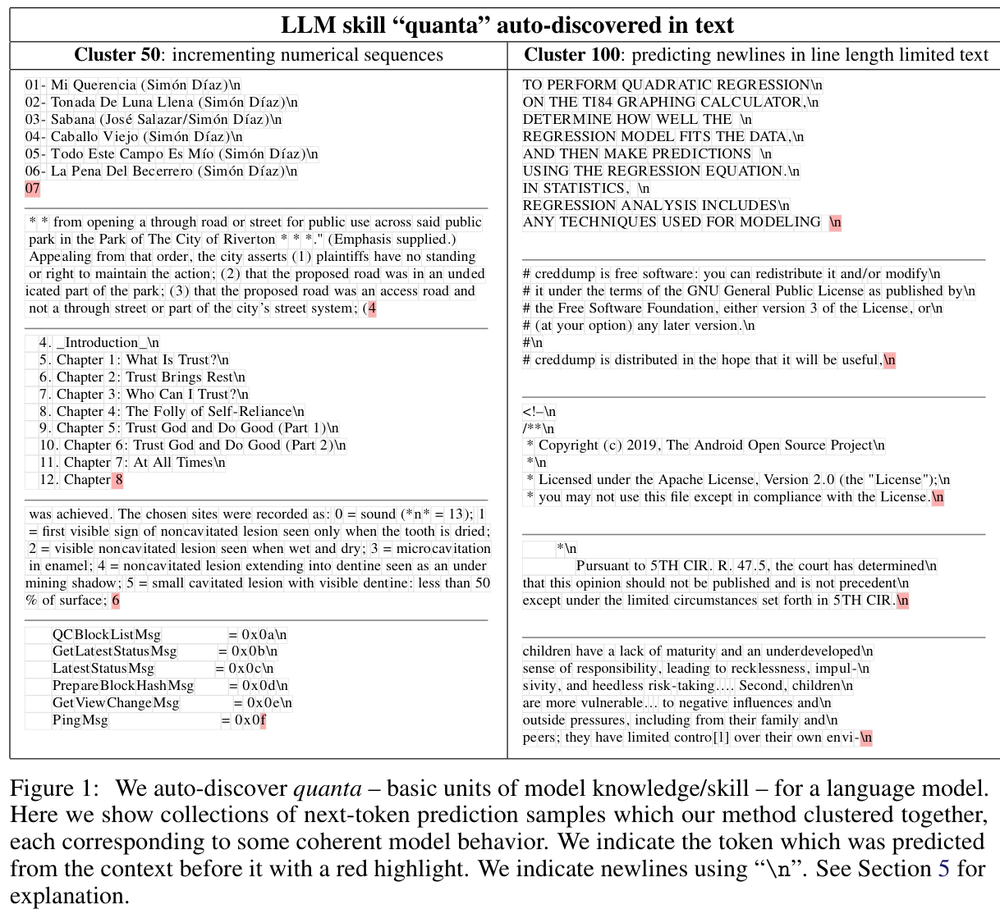
本页开头关于离散化假说的跨页段落已接续于上一页译出。
离散单元（quantum，复数 quanta）：不可分割的计算模块，例如用于检索一个事实、实现一种算法，或更一般地，对应模型具备的某种基本技能。
这一术语类比于 Max Planck 在 1900 年提出的假设：能量被量化为离散的块（quanta）。这里，我们设想知识／技能被离散化为不可分割的块（quanta）。由于机器学习中“quantization”通常用于低精度运算语境，我们建议用“知识离散化”（knowledge quantization）或“技能离散化”（skill quantization）指称我们这里的概念。我们将看到，支配离散单元“使用频率”的 Zipf 分布产生神经 scaling 的幂律：scaling 的作用是学会越来越多的离散单元，而平滑的 scaling laws 则是对模型性能中的微小离散跃升取平均。
本文结构如下：第 2 节从离散化假说出发，给出神经 scaling 幂律的理论模型。第 3 节构造满足假说的玩具数据集，其中平滑幂律是对模型性能中许多离散跃升取平均的结果。第 4 节分析真实 LLM 的幂律扩展如何分解。第 5 节通过将模型行为聚类为基本且连贯的技能，开发自动发现语言模型离散单元的方法，并分析这些聚类的统计性质，最后在第 7 节总结。
2. 理论
考虑建模互联网文本分布的任务。由于世界、进而人类语言的复杂性与多样性极高，成功预测需要海量知识以及执行多种计算的能力。例如，要预测两位物理学家对话中接下来会出现哪个词，就必须“知道”许多物理知识。要接续文本“2534 + 7261 = ”，就必须能够执行算术（对足够大的数而言，记忆是一种极低效的策略）[26]。世界中产生文本的过程包含众多不同类型的计算，因此，预测文本就要求我们的模型具备这些计算。
本文提出离散化（或离散单元）假说，即 Quantization（或 Quanta）Hypothesis：
QH1 许多自然预测问题可分解为可枚举的计算、知识片段或技能集合，模型必须学会它们以降低 loss。我们称其为离散单元，并将其建模为离散的：或者学会，或者未学会。模型性能由已经学会哪些离散单元决定。
QH2 一些离散单元比另一些更有助于降低 loss，因此它们存在自然顺序。我们把排序后的离散单元称为 Q 序列（Q Sequence）。因此，经过最优训练的网络应按此顺序学会离散单元。Scaling 的作用是学会 Q 序列中更多单元，因此 scaling 性能仅由成功学会多少个离散单元决定。
QH3 离散单元用于预测的频率遵循幂律。
这些假设共同能够产生神经 scaling 的幂律。我们如下建模离散化假说，并将其称为“离散化（或离散单元）模型”。设 \(q\) 为位串，若 Q 序列中的第 \(k\) 个离散单元已经学会，则其第 \(k\) 位 \(q_k=1\)，否则 \(q_k=0\)。QH1 意味着平均 loss \(L\) 只是 \(q\) 的函数。QH2 意味着，当学会 \(n\equiv\sum_kq_k\) 个离散单元时，对 \(k\leq n\) 有 \(q_k=1\)。用 \(L_n\) 表示此时的平均 loss。根据 QH3，对于 Zipf 幂律 \(\alpha>0\)，第 \(k\) 个离散单元对随机选择样本的预测产生帮助的概率为：
其中 \(\zeta(s)\equiv\sum_{k=1}^\infty k^{-s}\)。进一步假设，学会第 \(k\) 个离散单元，会使使用它的样本上的平均 loss 从学会前的 \(b_k\) 降至学会后的 \(a_k\)。若 \(a_k\)、\(b_k\) 与 \(k\) 无关（\(a_k=a,b_k=b\)），则学会前 \(n\) 个离散单元的模型，其期望 loss 为：
换言之，\(L_\infty=a\)，而 \((L_n-L_\infty)\propto n^{-\alpha}\) 是幂律。
附录 A 针对 \(a_k\)、\(b_k\) 的其他假设提供类似推导，发现一系列假设都产生精确或近似幂律曲线，后者包含一个很小的对数修正。
上述推导假定所有样本均属于我们所说的“单单元”（monogenic）类型，即预测最多依赖一个离散单元，类似生物学中单基因性状（例如囊性纤维化）只依赖一个基因。假定所有样本都是单单元类型后，可以将期望 loss 写成对离散单元求和，以依赖该单元的样本比例 \(p_k\) 加权。第 4.2 节进一步探索单单元与多单元（polygenic）样本的概念。目前，我们已经看到离散化假说如何产生关于已学离散单元数量 \(n\) 的幂律扩展。接下来给出一种可能机制，说明这如何转化为关于参数、数据等的幂律扩展：
参数扩展：在有限规模网络中，网络容量可能限制能学会多少个离散单元。假设所有离散单元都需要相同容量，即 \(C\) 个网络参数，那么一个具有 \(N\) 个参数的网络大约能学会 \(n\approx N/C\) 个离散单元。因此，\(L(N)-L_\infty\propto n^{-\alpha}\approx(N/C)^{-\alpha}\propto N^{-\alpha}\)，从而得到关于 \(N\) 的幂律扩展，其指数 \(\alpha_N=\alpha\)。
数据扩展（多 epoch）：对于数据扩展，我们假设，为学会每个离散单元 \(k\)，训练集中需要至少 \(\tau\) 个使用该单元的样本。3当训练样本数为 \(D\) 时，大约有 \(Dp_k\) 个样本依赖单元 \(k\)；求解 \(Dp_n=\tau\)，由 \(p_k\propto k^{-(\alpha+1)}\) 得到最后学会的离散单元满足 \(n\propto(D/\tau)^{1/(\alpha+1)}\)。在这一模型下，数据样本方面的扩展为 \(L(D)-L_\infty\propto n^{-\alpha}\propto(D/\tau)^{-\alpha/(\alpha+1)}\propto D^{-\alpha/(\alpha+1)}\)，因此 \(\alpha_D=\alpha/(\alpha+1)\)。结合此前 \(\alpha_N=\alpha\) 的结果，我们预测 \(\alpha_D=\alpha_N/(\alpha_N+1)\)。附录 F 讨论这一关系是否在各项研究观测到的数据和参数 scaling 指数之间经验成立。
数据扩展（单 epoch）：多 epoch 训练中，训练数据集包含的信息可能限制能学会哪些离散单元。然而，SGD 收敛速度也可能限制性能。对于单 epoch 训练，更多训练样本意味着能够训练更长时间。在我们的模型中，每个离散单元使平均 loss 降低的幅度遵循幂律。如果学习这些单元的 gradient 幅值也遵循幂律，那么每个单元的收敛时间也可能遵循幂律。若学会离散单元 \(k\) 所需步数正比于 \(1/p_k\)，且第一个离散单元需要 \(T\) 步学会，那么第 \(n\) 个单元需要 \(Tn^{\alpha+1}\) 步，因此在 \(S\) 步内可学会 \(n=(S/T)^{1/(\alpha+1)}\) 个单元。这样便得到训练步数上的扩展：\(L(S)-L_\infty\propto n^{-\alpha}\approx(S/T)^{-\alpha/(\alpha+1)}\propto S^{-\alpha/(\alpha+1)}\)，因此 \(\alpha_S=\alpha/(\alpha+1)\)。在这一模型下，多 epoch 和单 epoch 的数据 scaling 指数相同：\(\alpha_D=\alpha_S\)。
3. 概念验证：玩具数据集
本节介绍一个由不同子任务组成、子任务频率呈幂律分布的玩具数据集。我们在该任务上观察到数据和参数方面的神经 scaling 幂律，并发现其神经 scaling 机制与第 2 节理论一致。因此，对于具有恰当结构的数据，scaling laws 可能由离散单元模型产生。关于自然数据集（例如自然语言建模）是否具有此类结构的研究，留到第 4 节。
3.1. “多任务稀疏奇偶性”数据集
我们构造的玩具任务包含许多子任务，即不同类型的输入，各自需要相应的不同计算（离散单元）。对每个子任务，我们选用近期 [28] 研究的“稀疏奇偶性”问题的一种变体。稀疏奇偶性预测很简单：给定长度为 \(n\) 的位串，计算其中某个固定的 \(k\) 位子集的奇偶性（求和后模 2）。我们将该任务扩展为“多任务稀疏奇偶性”。除 \(n\)、\(k\) 外，它增加参数 \(n_{\mathrm{tasks}}\)，表示数据集中的子任务数量（不同版本的稀疏奇偶性数量）。构造任务时，首先从 \(\{1,2,\ldots,n\}\) 中随机选择 \(n_{\mathrm{tasks}}\) 个含 \(k\) 个索引的子集 \(S_i\)：\(S_i\subset\{1,2,\ldots,n\}\)、\(|S_i|=k\)，其中 \(i=1,2,\ldots,n_{\mathrm{tasks}}\)。输入位串长度为 \(n_{\mathrm{tasks}}+n\)。前 \(n_{\mathrm{tasks}}\) 位称为控制位，后 \(n\) 位称为任务位。如果控制位 \(i\) 被激活，就在任务位子集 \(S_i\) 上计算奇偶性。控制位用 one-hot 编码任务编号：给定输入中，一次只有一个控制位设为 1，其余均为零。下例中，控制位 2 被激活，因此答案为任务位 \(S_2=\{2,7\}\) 的奇偶性，对于此输入答案为 0：
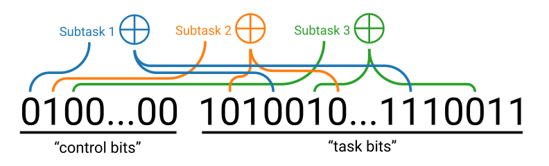
3此类阈值存在先例，例如出现“grokking”的算法任务 [27]。
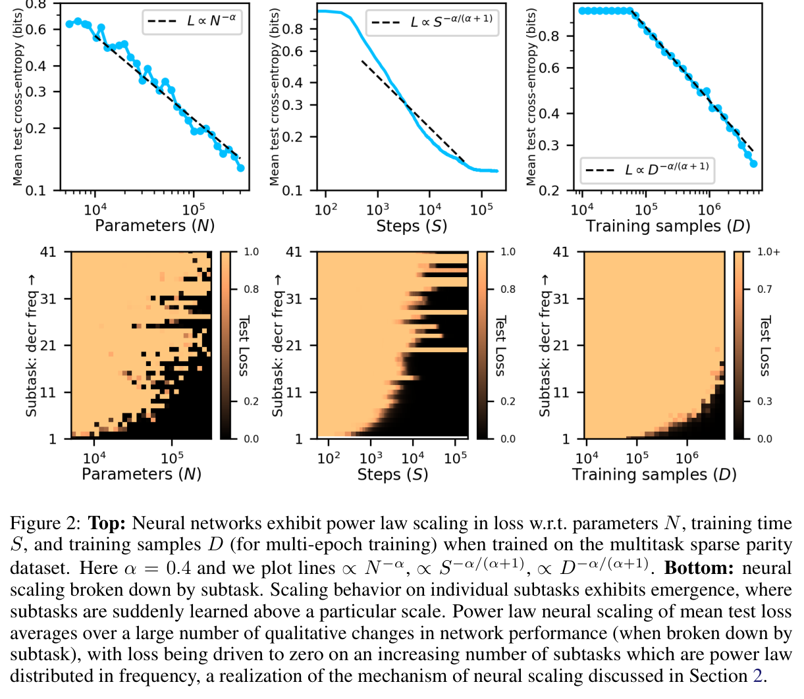
我们令任务位服从均匀分布。对控制位施加 Zipf 分布：某个样本激活控制位 \(i\)（因此须在任务位子集 \(S_i\) 上计算奇偶性）的概率为 \(Z^{-1}i^{-(\alpha+1)}\)，其中 \(Z=\sum_{i=1}^{n_{\mathrm{tasks}}}i^{-(\alpha+1)}\)。这使数据中的子任务服从幂律分布。由于答案是奇偶性，该任务可视为位串子集 \(\{0,1\}^{n_{\mathrm{tasks}}+n}\) 上的二分类问题，其中每个位串的前 \(n_{\mathrm{tasks}}\) 位除一个为 1 外，其余全为零。
3.2. 幂律扩展与涌现
我们以交叉熵 loss 训练单隐层 ReLU MLP 来解决此任务。输入维数为 \(n_{\mathrm{tasks}}+n\)。使用 Adam 优化器，学习率为 \(10^{-3}\)。为研究模型参数数量方面的扩展，我们在线采样 batch，训练不同宽度的网络。在一次单 epoch 训练运行内部，可以研究步数 \(S\) 方面的扩展。为研究多 epoch 训练数据集规模 \(D\) 方面的扩展，我们使用足够宽、容量不构成瓶颈的网络，对不同 \(D\) 采样含 \(D\) 个样本的训练集，训练多个 epoch，并记录平均测试 loss 最低时的模型性能（提前停止）。
多任务稀疏奇偶性问题的训练动态相当复杂：在每个单独子任务上，loss 遵循反 S 曲线，在初始平台之后下降。这一转变在不同子任务上发生的时间不同，因此整体 loss 通过平均这些转变而平滑下降。更多关于训练动态的讨论见附录 B。
图 2 展示多任务稀疏奇偶性问题的 scaling 曲线。所示结果使用 \(n_{\mathrm{tasks}}=500\)、\(n=100\)、\(k=3\)、\(\alpha=0.4\)，batch 大小为 20000。训练数据集规模从 \(10^4\) 变化到 \(5\times10^6\)，隐层宽度从 10 变化到 500 个神经元，训练 \(2\times10^5\) 步。与第 2 节理论一致，我们发现，随着训练数据和参数规模扩大，网络大致按频率顺序学会越来越多的离散单元（降低越来越多子任务上的 loss），这正是神经 scaling 的驱动机制。（本句接原文第 6 页。）
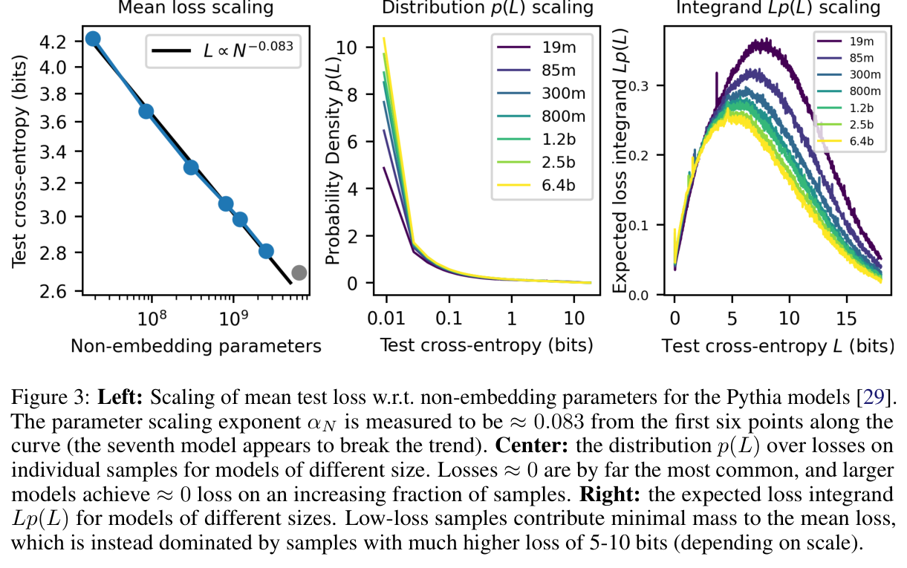
本页正文首句已接续于上一页译出。
我们看到，参数扩展比数据扩展更嘈杂，可能是模型初始化对学会哪些离散单元有一定影响（数据扩展实验中，所有运行采用相同种子和模型规模）。我们还看到，在单个子任务的 scaling 中，数据或参数大致存在一个规模阈值：低于它，网络学不会任务；高于它，网络能够学会。因此，若按子任务恰当地分解，平滑幂律扩展是在对模型性能中的大量涌现变化取平均；这构成了概念验证：对具有恰当结构的数据，离散单元模型可以成为神经 scaling 的机制。附录 B 提供更多结果，并讨论经验上 scaling 指数 \(\alpha_N,\alpha_S,\alpha_D\) 与子任务分布幂律指数 \(\alpha+1\) 的关系。
4. 分解 LLM scaling laws
我们现在研究大型语言模型的 scaling 曲线如何分解。实验采用 Eleuther AI 的 Pythia 模型套件 [29]，这是一组规模不同、仅解码器的 transformer，在 The Pile [30] 约 3000 亿 token 上训练。我们在 The Pile 测试集约 1000 万 token 上评测套件中的多个模型，非 embedding 参数量从 19m 到 6.4b。我们记录每个 token 的交叉熵 loss，从而研究单个 token 的 loss，以及 loss 分布如何随模型规模变化。
4.1. 逐 token loss 的分布
图 3 展示 loss 分布如何随模型规模扩展。首先，我们发现，Pythia 序列前六个模型的平均 loss 按幂律变化，指数为 \(\alpha_N=0.083\)，与 [3] 测得的参数 scaling 指数 0.076 大致一致。6.4b 模型与 scaling 曲线拟合不佳，因此测量指数时未纳入其 loss。接下来，绘制逐 token loss 的概率分布 \(p(L)\)。我们发现，接近零的 loss 最常见，而且扩展规模会增加近零 loss 的比例。我们还绘制 \(Lp(L)\)，即以 loss 加权的 loss 概率密度。平均 loss 就是该曲线下的面积。可以看到，尽管近零 loss 的 token 最常见，它们对平均 loss 的贡献却很小。图 11 展示这些分布如何随训练步数而非模型规模变化。我们指出，实际神经 scaling 比多任务稀疏奇偶性复杂得多，尤其是 loss 分布并不呈双峰。关于 LLM 神经 scaling 的统计性质是否与以往神经 scaling 模型兼容的详细研究，我们留待未来。（本段接原文第 7 页。）
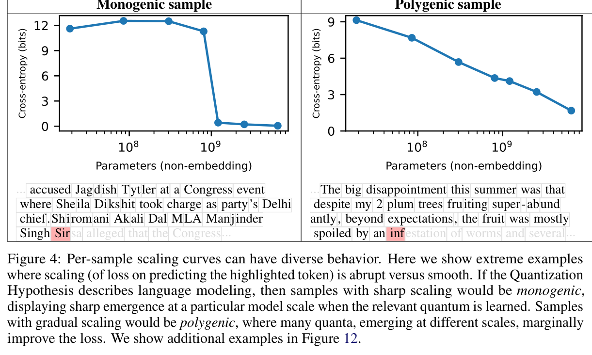
本页开头关于 loss 分布的跨页段落已接续于上一页译出。
4.2. 单单元与多单元 scaling 曲线
在第 2 节介绍离散化假说和第 3 节研究多任务稀疏奇偶性时，我们把网络在单个样本上的性能建模为受益于一个离散单元：所有样本都属于某一个子任务，而该子任务以二元方式被解决或未被解决。在我们的模型和多任务稀疏奇偶性中，单个样例的 scaling 曲线都呈现涌现：在某个特定参数或数据规模下，单个样例的 loss 会发生陡变。大型语言模型中也能观察到这一点吗？
检查大量逐 token（逐样本）的 scaling 曲线后，我们观察到多种扩展行为。有些样本的 loss 在特定规模下下降，但更典型的是，loss 在多个规模上改善。如果离散化假说成立，且 scaling 的效果只是给模型加入新离散单元，那么逐样本 loss 曲线在多个规模上取得进展，就要求这些样本以加和方式受益于多个离散单元。如第 2 节首次提及的那样，我们借用遗传学术语，将模型性能由单个离散单元决定的预测问题称为单单元（monogenic）类型，类比由单个基因决定性状；将多个单元影响性能的问题称为多单元（polygenic）类型，类比多个基因共同贡献一个性状。多任务稀疏奇偶性中的所有预测问题都是单单元类型。自然语言中，大多数 token 的模型性能会在多个规模上改善，说明多数 token 属于多单元类型；但我们也能找到 loss 随规模以单次相变方式下降的 token。多单元性构成一个连续谱：不同样例的 loss 曲线平滑程度可能差异很大，可能一些预测问题使用少数单元，另一些则使用很多。图 4 展示单单元与多单元样本的极端例子。
注意，我们对模型行为的单单元／多单元分类假设 QH1 与 QH2 成立。然而，模型所学内容可能并不具有内在离散性，或者 scaling 完全改变网络所学内容，而不只是添加额外单元。Scaling 是否真的具有我们描述的作用，有待未来关于神经网络内部机制的研究。我们还指出，逐 token loss 曲线中的陡变可能源于噪声；若每种模型规模都有多次采用不同随机种子的训练运行，就能更好地检验：不同种子上的平均 loss 是否平滑下降，还是确实存在离散性，以至于看似“单单元”的 token 不可能渐进改善。
5. 语言建模的离散单元
我们猜想，语言模型的内部机制与行为可以分解为可枚举的模块及其相关技能（离散单元）集合。这些 LLM 的基本积木可能是什么？本节开发一种发现离散单元的初步方法。具体而言，我们尝试依据 LLM 从上下文预测 token 所用的知识或技能，对语言语料中的 token 聚类。目标是找到连贯的模型行为聚类，每一类都揭示模型学到的某项独特技能。注意，通过聚类 token 发现离散单元时，我们作出了一个很可能不现实的假设，即这些 token 为单单元类型，预测每个 token 只涉及一个单元。还要注意，这些行为聚类并不提供对单元的机制性理解，只提供可供未来进一步研究的 LLM 技能示例。
我们建议利用 gradient 聚类下一个 token 预测样本，其中“样本”由一个 token 及其在某篇文档中的上下文组成。给定模型，如果两个样本各自 loss 对模型参数的 gradient 相似，就将它们聚到一起。使用 gradient 的直觉如下：如果模型使用相同内部模块生成两个样本上的预测，那么模块内部参数的 gradient 对这两个样本可能非零且相似，而无关模块参数的 gradient 可能约为零。如果模型使用不同模块生成不同样本的预测，gradient 可能不重叠。因此，我们以 gradient 相似性作为机制相似性的代理，衡量模型是否使用相似机制／模块对不同样本进行预测。虽然粗糙，我们发现 gradient 包含足够信息，能够借助以下算法自动发现许多连贯的 LLM 行为聚类：
从 gradient 发现离散单元（Quanta Discovery from Gradients，QDG）：我们对 gradient 进行谱聚类，找出 gradient 具有非零余弦相似性的样本簇。给定样本集 \((x_i,y_i)\) 和模型 \(f_\theta\)，计算每个样本的 gradient \(g_i=\nabla_\theta L(f_\theta(x_i),y_i)\)。随后归一化 \(g_i\mapsto\widehat g_i\)，使 \(\widehat g_i\cdot\widehat g_i=1\)。设矩阵 \(A\) 的行是归一化 gradient：\(A_{i,\cdot}=\widehat g_i\)。如果聚类 \(d\) 个样本且模型有 \(n\) 个参数，\(A\) 的形状为 \((d,n)\)。计算亲和矩阵 \(C=AA^\mathsf T\)，其形状为 \((d,d)\)，其中 \(C_{ij}=\widehat g_i\cdot\widehat g_j\)，即 \(g_i,g_j\) 的余弦相似性。由此通过 \(\widehat C_{ij}=1-\arccos(C_{ij})/\pi\) 计算角相似性的亲和矩阵 \(\widehat C\)，其取值位于 \([0,1]\)。最后，用 \(\widehat C\) 对样本进行谱聚类。
对于大型模型和大量样本，QDG 计算成本较高。因此，我们只将其用于 Pythia 套件最小的模型，它具有 19m 非 embedding 参数。我们聚类了该模型以较高置信度正确预测、交叉熵小于 0.1 nat 的 10000 个 token。更多细节见附录 C.1。
我们发现，许多但并非全部 QDG 聚类揭示某种连贯的模型行为。图 1 和图 13 展示聚类示例。这些聚类采用谱聚类超参数 n_clusters = 400 得到。虽然多数簇涉及预测相同 token，人工检查发现，它们通常是出于连贯的原因预测同一 token，而非仅仅因为输出相同。我们也发现了对应更抽象预测规则的聚类。例如，图 1 左列展示的离散单元是递增数值序列的技能，示例涉及预测多个不同的数字 token。
5.1. 语言建模离散单元的自然分布
在我们的模型中，一些离散单元比另一些使用得更频繁。如果这些频率按离散化假说所述遵循幂律，那么可以预期 QDG 聚类规模也由幂律支配。图 3 中测得的 scaling 指数 \(\alpha_N=0.083\)，意味着离散单元分布的幂律指数为 \(-1.083\)。聚类规模是否遵循这一规律？
图 5 展示不同 n_clusters 下，QDG 发现的聚类的秩频曲线。这些曲线先按簇大小排序，再绘制大小与簇索引（秩）的关系。由于事先并不清楚应采用哪个 n_clusters，我们绘制了多种设置的秩频曲线。测量秩频曲线斜率时，我们从多条秩频曲线构成的包络测量；我们将在附录 E 中讨论这一做法。（本句接原文第 9 页。）
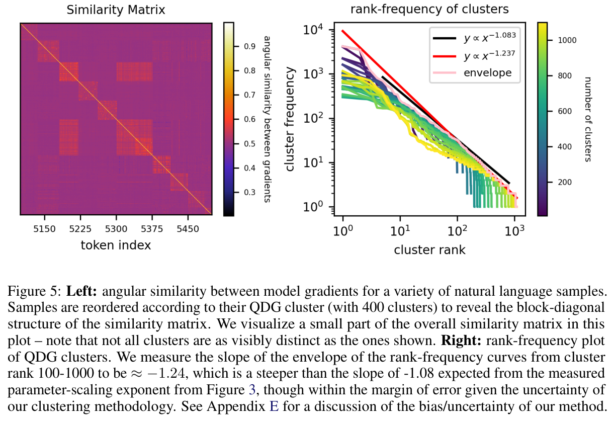
本页正文首句已接续于上一页译出。
聚类算法的偏差与模型 gradient 的内在噪声使聚类并不完美，也使所测幂律指数存在很大不确定性。根据附录 E 的分析，我们认为，通过测量秩频曲线斜率提取离散单元使用频率的幂律指数，至少应有 0.2 的不确定性。我们还注意到，一些秩频曲线看起来并不是清晰的幂律。在附录 E 的图 16 中，我们发现，当维数和噪声较高时，这一聚类过程的玩具模型也能产生外观相似的曲线。在秩 100–1000 之间，我们测得斜率约 \(-1.24\)，与预期斜率 \(-1.08\) 相差约 0.16，因此处于误差范围内。我们发现的簇大小似乎以与观测神经 scaling 指数非常粗略兼容的速率衰减，符合理论，这令人鼓舞。不过，采用不那么粗糙的聚类方案，在更多样本上建立更多聚类，可能有助于提高测量精度。
6. 相关工作
神经 scaling 模型：以往工作已经提出若干神经 scaling laws 模型。Sharma 和 Kaplan [31] 利用逼近理论论证，解释模型参数方面的幂律扩展，并将神经 scaling 指数与数据流形维数 \(d\) 联系起来。Michaud et al. [32] 指出，对于稀疏组合问题，有效维数 \(d\) 可推广为目标函数计算图的最大元数。Bahri et al. [33] 将 Sharma 和 Kaplan [31] 的模型推广到数据集规模方面的扩展，并进一步将 scaling 指数与某些核的幂律谱联系起来。Maloney et al. [34] 开发了一个精确可解的随机特征 scaling 模型，并从中推导参数与数据的联合 scaling law。Bordelon et al. [35] 为核方法开发数据扩展模型，将泛化误差分解为各本征模态之和，而我们将误差分解为各离散单元之和。与我们最接近的先前工作可能是 Hutter [36]，他开发的数据扩展模型要求学会一个离散“特征”集合。在该模型中，只要一个特征在训练集中至少出现一次，就被认为学会了。如果特征服从 Zipf 分布，期望上就会产生幂律扩展，但方差较高。我们的模型采用数据阈值 \(\tau\gg1\)，降低 scaling 曲线的方差；我们还考虑了参数方面的扩展，并将模型应用于真实网络。
理解涌现能力：Wei et al. [8] 和 Srivastava et al. [37] 记录了大型语言模型的涌现能力示例，不过 Schaeffer et al. [38] 认为，这些示例是由评估性能所用指标产生的假象。Arora 和 Goyal [39] 开发了“技能”涌现的框架，其中预测文本需要组合某个底层语言技能集合中的多个不同技能。（本段接原文第 10 页。）
本页开头关于涌现能力的跨页段落已接续于上一页译出。
其他：机器学习中的相变并非新话题 [40]，但我们的工作深受 Olsson et al. [25] 近期研究的影响，他们观察到 induction heads 的形成引发相变；尤其受到 Nanda et al. [13] 的影响，他们猜想相变可能普遍存在。Simon et al. [41] 也展示了一个学习以一系列离散步骤推进的任务。Chen et al. [42] 开发框架，用于层级化理解 LLM“技能”，并选择数据以更高效地学会期望技能。Chan et al. [43] 研究 Zipf 数据分布如何影响上下文学习。
7. 讨论
总结：离散化假说认为，对于某些类型的预测问题，模型必须学会一组离散的模块／知识／技能（离散单元）。当数据分布使这些单元的“使用频率”遵循幂律时，随着模型学会越来越多单元，就会出现神经 scaling 的幂律，而平滑 scaling 曲线是对许多小型涌现现象取平均。我们展示了一个神经 scaling 具备这些性质的玩具数据集。接着，除了平均 loss 如何扩展，我们还记录了语言模型 scaling 曲线如何分解。最后，我们开发了从已训练模型内部结构发现离散单元的方法，从而枚举出一个小型语言模型的大量技能。我们发现的单元在自然文本中用于预测的频率，似乎粗略遵循理论预测的幂律，不过测量相当不精确。
局限：虽然离散化假说似乎适用于我们的玩具数据集，仍需大量工作考察它在多大程度上适用于语言建模等自然任务。我们最冒险的假设可能是：模型学到的所有内容都具有内在离散性。渐进 scaling 在 LLM 中似乎很典型 [38]；相比假定大多数任务高度多单元化、底层由离散单元组成，将神经 scaling 建模为底层平滑过程，可能更简约。还要注意，我们关于参数 \(N\) 的 scaling 模型中，更多参数只会增大网络容量。但实践中，更大网络学习得更高效 [7]，参数和数据之间可以权衡；而在我们的模型中，参数与数据独立限制可学会的单元数量。此外，我们将离散单元建模为相互独立、学习顺序仅由使用频率决定；但将它们视为处于层级依赖图中，可能更合理。最后，QDG 方法既不够有原则，也不易扩展；很可能能开发更好方法，发现更大模型中的离散单元，并在更多样本上研究统计性质。
对涌现与预测的启示：Srivastava et al. [37] 发现，一些任务的神经 scaling 具有较强“线性”，性能随规模渐进改善；另一些任务则表现出“突破性”，在某个规模下性能陡升。在我们的模型中，较强线性来自任务相关单元广泛分布于 Q 序列；较强突破性则来自任务为单单元类型，或相关单元在 Q 序列中相邻。模型还表明，如果能估计某项技能在训练语料中有益于预测的频率，就可能预测未来能力。
对机制可解释性的启示：如果离散化假说成立，理解网络就归结为枚举其离散单元。完成这一步后，或许可以将离散单元转换为更可解释的形式（类似代码），以这种形式研究，最终也以这种形式执行，而不再依赖网络运行。
展望：最后，我们将网络分解为离散单元的观点，让人联想到 Minsky 的《心智社会》[44]：心智可以分解为单独看来没有心智的“agent”。如果这种分解确实可能，那么离散单元（agent）就成为网络内部自然的研究对象。这种以共同构成网络性能的内部模块为基础的中观理解，或许能像统计物理之于深度学习那样，将我们对底层训练动态的微观理解与对模型性能的宏观理解连接起来。
致谢与资助披露
感谢 Tamay Besiroglu、Neel Nanda、Tony Wang、David Bau、Ben Edelman、Brian Cheung、Wes Gurnee、Stephen Casper、Peter Hase、Davis Brown、Eleni Shor、Max Nadeau 和 Xander Davies 的有益交流与反馈。感谢 Lauro Langosco 帮助编写可视化 The Pile 样本的代码。本研究获 Foundational Questions Institute、Rothberg Family Fund for Cognitive Science、NSF Graduate Research Fellowship（项目编号 2141064），以及通过 NSF 项目 PHY-2019786 支持的 IAIFI 资助。
参考文献
[1] Joel Hestness, Sharan Narang, Newsha Ardalani, Gregory Diamos, Heewoo Jun, Hassan Kianinejad, Md Patwary, Mostofa Ali, Yang Yang, and Yanqi Zhou. 深度学习 scaling 在经验上可预测。. In: arXiv preprint arXiv:1712.00409 (2017).
[2] Jonathan S Rosenfeld, Amir Rosenfeld, Yonatan Belinkov, and Nir Shavit. 跨规模泛化误差的构造性预测。. In: arXiv preprint arXiv:1909.12673 (2019).
[3] Jared Kaplan, Sam McCandlish, Tom Henighan, Tom B Brown, Benjamin Chess, Rewon Child, Scott Gray, Alec Radford, Jeffrey Wu, and Dario Amodei. 神经语言模型的 scaling laws。. In: arXiv preprint arXiv:2001.08361 (2020).
[4] Tom Henighan, Jared Kaplan, Mor Katz, Mark Chen, Christopher Hesse, Jacob Jackson, Heewoo Jun, Tom B Brown, Prafulla Dhariwal, Scott Gray, et al. 自回归生成建模的 scaling laws。. In: arXiv preprint arXiv:2010.14701 (2020).
[5] Mitchell A Gordon, Kevin Duh, and Jared Kaplan. 神经机器翻译的数据与参数 scaling laws。. In: Proceedings of the 2021 Conference on Empirical Methods in Natural Language Processing. 2021, pp. 5915–5922.
[6] Xiaohua Zhai, Alexander Kolesnikov, Neil Houlsby, and Lucas Beyer. 扩展视觉 transformer。. In: Proceedings of the IEEE/CVF Conference on Computer Vision and Pattern Recognition. 2022, pp. 12104–12113.
[7] Jordan Hoffmann, Sebastian Borgeaud, Arthur Mensch, Elena Buchatskaya, Trevor Cai, Eliza Rutherford, Diego de Las Casas, Lisa Anne Hendricks, Johannes Welbl, Aidan Clark, et al. 训练计算最优的大型语言模型。. In: arXiv preprint arXiv:2203.15556 (2022).
[8] Jason Wei, Yi Tay, Rishi Bommasani, Colin Raffel, Barret Zoph, Sebastian Borgeaud, Dani Yogatama, Maarten Bosma, Denny Zhou, Donald Metzler, Ed H. Chi, Tatsunori Hashimoto, Oriol Vinyals, Percy Liang, Jeff Dean, and William Fedus. 大型语言模型的涌现能力。. In: Transactions on Machine Learning Research (2022). Survey Certification. ISSN: 2835-8856. URL: https://openreview.net/forum?id=yzkSU5zdwD.
[9] Jacob Steinhardt. 未来机器学习系统将发生质的变化。 Accessed: 2023-10-26. Jan. 2022. URL: https://bounded-regret.ghost.io/future-ml-systems-will-bequalitatively-different/.
[10] Deep Ganguli, Danny Hernandez, Liane Lovitt, Amanda Askell, Yuntao Bai, Anna Chen, Tom Conerly, Nova Dassarma, Dawn Drain, Nelson Elhage, et al. 大型生成模型中的可预测性与意外。. In: 2022 ACM Conference on Fairness, Accountability, and Transparency. 2022, pp. 1747–1764.
[11] Chris Olah, Nick Cammarata, Ludwig Schubert, Gabriel Goh, Michael Petrov, and Shan Carter. 放大观察：circuits 入门。. In: Distill (2020). https://distill.pub/2020/ circuits/zoom-in. DOI: 10.23915/distill.00024.001.
[12] Nick Cammarata, Gabriel Goh, Shan Carter, Ludwig Schubert, Michael Petrov, and Chris Olah. 曲线检测器。. In: Distill 5.6 (2020), e00024–003.
[13] Neel Nanda, Lawrence Chan, Tom Liberum, Jess Smith, and Jacob Steinhardt. 通过机制可解释性衡量 grokking 的进展。. In: arXiv preprint arXiv:2301.05217 (2023).
[14] Kenneth Li, Aspen K Hopkins, David Bau, Fernanda Viégas, Hanspeter Pfister, and Martin Wattenberg. 涌现的世界表示：探索在合成任务上训练的序列模型。. In: arXiv preprint arXiv:2210.13382 (2022).
[15] Kevin Wang, Alexandre Variengien, Arthur Conmy, Buck Shlegeris, and Jacob Steinhardt. 现实场景中的可解释性：GPT-2 small 中用于间接宾语识别的 circuit。. In: arXiv preprint arXiv:2211.00593 (2022).
[16] Nelson Elhage, Neel Nanda, Catherine Olsson, Tom Henighan, Nicholas Joseph, Ben Mann, Amanda Askell, Yuntao Bai, Anna Chen, Tom Conerly, Nova DasSarma, Dawn Drain, Deep Ganguli, Zac Hatfield-Dodds, Danny Hernandez, Andy Jones, Jackson Kernion, Liane Lovitt, Kamal Ndousse, Dario Amodei, Tom Brown, Jack Clark, Jared Kaplan, Sam McCandlish, and Chris Olah. Transformer circuits 的数学框架。. In: Transformer Circuits Thread (2021). https://transformer-circuits.pub/2021/framework/index.html.
[17] Tom Lieberum, Matthew Rahtz, János Kramár, Geoffrey Irving, Rohin Shah, and Vladimir Mikulik. Circuit 分析可解释性能否扩展？来自 Chinchilla 多项选择能力的证据。. In: arXiv preprint arXiv:2307.09458 (2023).
[18] Stephen Casper, Shlomi Hod, Daniel Filan, Cody Wild, Andrew Critch, and Stuart Russell. 深度神经网络的图聚类性与局部专门化。. In: ICLR 2022 Workshop on PAIR {\textasciicircum} 2Struct: Privacy, Accountability, Interpretability, Robustness, Reasoning on Structured Data. 2022.
[19] Trenton Bricken, Adly Templeton, Joshua Batson, Brian Chen, Adam Jermyn, Tom Conerly, Nick Turner, Cem Anil, Carson Denison, Amanda Askell, Robert Lasenby, Yifan Wu, Shauna Kravec, Nicholas Schiefer, Tim Maxwell, Nicholas Joseph, Zac Hatfield-Dodds, Alex Tamkin, Karina Nguyen, Brayden McLean, Josiah E Burke, Tristan Hume, Shan Carter, Tom Henighan, and Christopher Olah. 迈向单义性：用字典学习分解语言模型。. In: Transformer Circuits Thread (2023). https://transformercircuits.pub/2023/monosemantic-features/index.html.
[20] Jonathan Frankle and Michael Carbin. 彩票假说：寻找稀疏且可训练的神经网络。. In: arXiv preprint arXiv:1803.03635 (2018).
[21] Deniz Bayazit, Negar Foroutan, Zeming Chen, Gail Weiss, and Antoine Bosselut. 发现预训练语言模型中对知识至关重要的子网络。. In: arXiv preprint arXiv:2310.03084 (2023).
[22] Yixuan Li, Jason Yosinski, Jeff Clune, Hod Lipson, and John Hopcroft. 收敛学习：不同神经网络是否学到相同表示？。 arXiv:1511.07543 [cs]. Feb. 2016. URL: http://arxiv.org/abs/1511.07543 (visited on 08/19/2022).
[23] Thao Nguyen, Maithra Raghu, and Simon Kornblith. 宽网络与深网络是否学到相同事物？揭示神经网络表示如何随宽度和深度变化。 arXiv:2010.15327 [cs]. Apr. 2021. URL: http://arxiv.org/abs/2010.15327.
[24] Amil Dravid, Yossi Gandelsman, Alexei A. Efros, and Assaf Shocher. Rosetta 神经元：挖掘模型动物园中的共同单元。 arXiv:2306.09346 [cs]. June 2023. DOI: 10.48550/arXiv. 2306.09346. URL: http://arxiv.org/abs/2306.09346.
[25] Catherine Olsson, Nelson Elhage, Neel Nanda, Nicholas Joseph, Nova DasSarma, Tom Henighan, Ben Mann, Amanda Askell, Yuntao Bai, Anna Chen, Tom Conerly, Dawn Drain, Deep Ganguli, Zac Hatfield-Dodds, Danny Hernandez, Scott Johnston, Andy Jones, Jackson Kernion, Liane Lovitt, Kamal Ndousse, Dario Amodei, Tom Brown, Jack Clark, Jared Kaplan, Sam McCandlish, and Chris Olah. 上下文学习与 induction heads。. In: Transformer Circuits Thread (2022). https://transformer-circuits.pub/2022/incontext-learning-and-induction-heads/index.html.
[26] Gwern Branwen. Scaling 假说。 2021. URL: https://gwern.net/scalinghypothesis.
[27] Alethea Power, Yuri Burda, Harri Edwards, Igor Babuschkin, and Vedant Misra. Grokking：小型算法数据集上超越过拟合的泛化。. In: arXiv preprint arXiv:2201.02177 (2022).
[28] Boaz Barak, Benjamin L Edelman, Surbhi Goel, Sham Kakade, Eran Malach, and Cyril Zhang. 深度学习中的隐藏进展：SGD 在接近计算极限处学会奇偶性。. In: arXiv preprint arXiv:2207.08799 (2022).
[29] Stella Biderman, Hailey Schoelkopf, Quentin Anthony, Herbie Bradley, Kyle O’Brien, Eric Hallahan, Mohammad Aflah Khan, Shivanshu Purohit, USVSN Sai Prashanth, Edward Raff, et al. Pythia：用于跨训练阶段和规模分析大型语言模型的套件。. In: arXiv preprint arXiv:2304.01373 (2023).
本页原文链接
- http://arxiv.org/abs/1511.07543
- http://arxiv.org/abs/2010.15327
- http://arxiv.org/abs/2306.09346
- https://doi.org/10.48550/arXiv.2306.09346
- https://gwern.net/scaling-hypothesis
- https://transformer-circuits.pub/2021/framework/index.html
- https://transformer-circuits.pub/2022/in-context-learning-and-induction-heads/index.html
[30] Leo Gao, Stella Biderman, Sid Black, Laurence Golding, Travis Hoppe, Charles Foster, Jason Phang, Horace He, Anish Thite, Noa Nabeshima, et al. The Pile：用于语言建模的 800GB 多样化文本数据集。. In: arXiv preprint arXiv:2101.00027 (2020).
[31] Utkarsh Sharma and Jared Kaplan. 由数据流形维数推导 scaling laws。. In: Journal of Machine Learning Research 23.9 (2022), pp. 1–34. URL: http://jmlr.org/ papers/v23/20-1111.html.
[32] Eric J. Michaud, Ziming Liu, and Max Tegmark. 精确机器学习。. In: Entropy 25.1 (2023). ISSN: 1099-4300. DOI: 10.3390/e25010175. URL: https://www.mdpi.com/ 1099-4300/25/1/175.
[33] Yasaman Bahri, Ethan Dyer, Jared Kaplan, Jaehoon Lee, and Utkarsh Sharma. 解释神经 scaling laws。. In: arXiv preprint arXiv:2102.06701 (2021).
[34] Alexander Maloney, Daniel A Roberts, and James Sully. 神经 scaling laws 的可解模型。. In: arXiv preprint arXiv:2210.16859 (2022).
[35] Blake Bordelon, Abdulkadir Canatar, and Cengiz Pehlevan. 核回归和宽神经网络中依赖于谱的学习曲线。. In: International Conference on Machine Learning. PMLR. 2020, pp. 1024–1034.
[36] Marcus Hutter. 学习曲线理论。. In: arXiv preprint arXiv:2102.04074 (2021).
[37] Aarohi Srivastava, Abhinav Rastogi, Abhishek Rao, Abu Awal Md Shoeb, Abubakar Abid, Adam Fisch, Adam R Brown, Adam Santoro, Aditya Gupta, Adrià Garriga-Alonso, et al. 超越模仿游戏：量化与外推语言模型的能力。. In: arXiv preprint arXiv:2206.04615 (2022).
[38] Rylan Schaeffer, Brando Miranda, and Sanmi Koyejo. 大型语言模型的涌现能力是海市蜃楼吗？。 In: arXiv preprint arXiv:2304.15004 (2023).
[39] Sanjeev Arora and Anirudh Goyal. 语言模型中复杂技能涌现的理论。. In: arXiv preprint arXiv:2307.15936 (2023).
[40] Lorenza Saitta, Attilio Giordana, and Antoine Cornuejols. 机器学习中的相变。 Cambridge University Press, 2011.
[41] James B Simon, Maksis Knutins, Liu Ziyin, Daniel Geisz, Abraham J Fetterman, and Joshua Albrecht. 自监督学习的阶跃性质。. In: arXiv preprint arXiv:2303.15438 (2023).
[42] Mayee F Chen, Nicholas Roberts, Kush Bhatia, Jue Wang, Ce Zhang, Frederic Sala, and Christopher Ré. Skill-it!：用于理解与训练语言模型的数据驱动技能框架。. In: arXiv preprint arXiv:2307.14430 (2023).
[43] Stephanie Chan, Adam Santoro, Andrew Lampinen, Jane Wang, Aaditya Singh, Pierre Richemond, James McClelland, and Felix Hill. 数据分布性质推动 transformer 中涌现的上下文学习。. In: Advances in Neural Information Processing Systems 35 (2022), pp. 18878–18891.
[44] Marvin Minsky. 心智社会。 Simon and Schuster, 1988.
[45] F. Pedregosa, G. Varoquaux, A. Gramfort, V. Michel, B. Thirion, O. Grisel, M. Blondel, P. Prettenhofer, R. Weiss, V. Dubourg, J. Vanderplas, A. Passos, D. Cournapeau, M. Brucher, M. Perrot, and E. Duchesnay. Scikit-learn：Python 中的机器学习。. In: Journal of Machine Learning Research 12 (2011), pp. 2825–2830.
[46] Ronen Eldan and Yuanzhi Li. TinyStories：语言模型可以多小，却仍能说出连贯英语？。 In: arXiv preprint arXiv:2305.07759 (2023).
[47] Pablo Villalobos. Scaling laws 文献综述。 https://epochai.org/blog/scalinglaws-literature-review. Accessed: 2023-01-31. 2023.
[48] Jasha Droppo and Oguz Elibol. 声学模型的 scaling laws。. In: arXiv preprint arXiv:2106.09488 (2021).
[49] Newsha Ardalani, Carole-Jean Wu, Zeliang Chen, Bhargav Bhushanam, and Adnan Aziz. 理解推荐模型的 scaling laws。. In: arXiv preprint arXiv:2208.08489 (2022).
附录
A. 更一般的 scaling laws
如果学会前 \(n\) 个离散单元，使 loss 从 \(b_k\) 降为 \(a_k\)（\(1\leq k\leq n\)），而对 \(k>n\)，loss 仍为 \(b_k\)，则期望 loss 为：
正文的模型采用 \(a_k=a\)、\(b_k=b\)。不过，\(a_k\)、\(b_k\) 可以有多种其他选择。
情形 1：\(b_k=-\log p_k\)、\(a_k=0\)，其中 \(p_k=k^{-(\alpha+1)}/\zeta(\alpha+1)\)。这一 \(b_k\) 基线是模型不依赖上下文、只输出 token 频率时的误差（假设离散单元涉及预测某个特定 token）。期望 loss 为：
其中包含幂律项 \(n^{-\alpha}\) 和对数项 \(n^{-\alpha}\log n\)。当 \(n\) 非常大时，对数项可以忽略，因此 \(L\) 仍近似是关于 \(n\)、指数为 \(-\alpha\) 的幂律，见图 6。
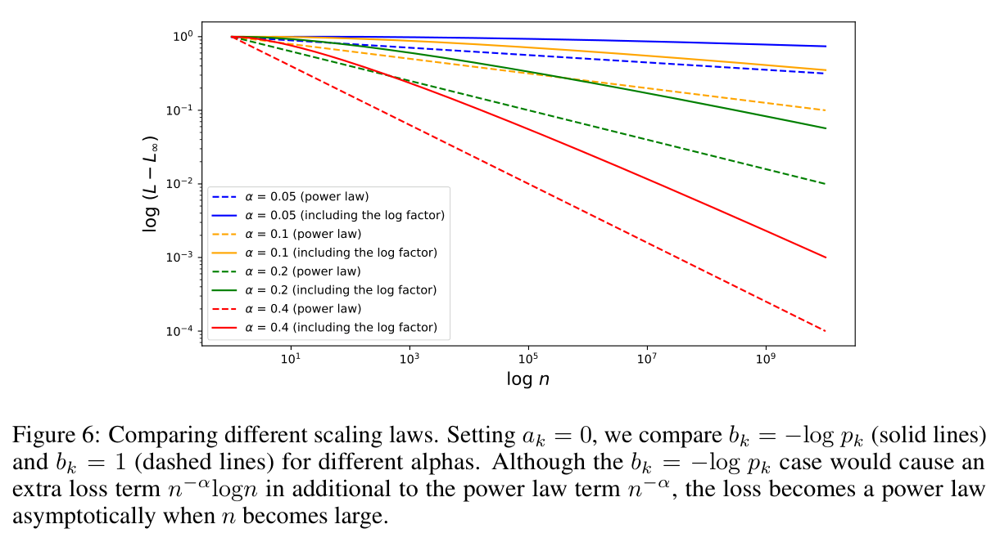
情形 2：\(b_k=-\log p_k\)、\(a_k=-\log(Cp_k)\)（\(C>1\)），其中 \(p_k=k^{-(\alpha+1)}/\zeta(\alpha+1)\)。期望 loss 为：
它由幂律 \(n^{-\alpha}\) 加一个常数构成。
B. 多任务稀疏奇偶性的补充结果
训练动态：将多任务稀疏奇偶性的 loss 按子任务分解后，学习曲线由许多反 S 曲线组成，而平均 loss 作为这些曲线的平均值平滑下降。图 7 展示单 epoch 和多 epoch 训练运行中每个子任务的 loss 随时间变化。图 8 展示每个子任务的收敛时间与其频率的关系。
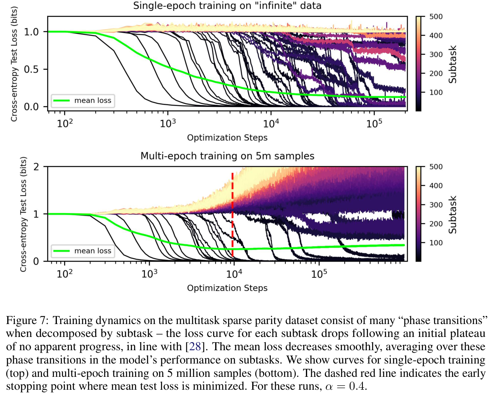
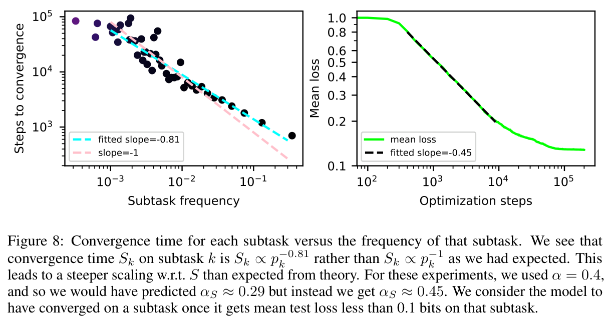
不同 \(\alpha\) 下的扩展：图 10 展示多个离散单元分布参数 \(\alpha\) 下，多任务稀疏奇偶性在 \(N,S,D\) 方面的 scaling 曲线。虽然所有曲线看起来都呈幂律，\(\alpha_N,\alpha_S,\alpha_D\) 与 \(\alpha\) 的关系并不完全符合理论预测：
- 参数扩展：我们观察到，\(\alpha_N\) 和 \(\alpha\) 的关系与预测 \(\alpha_N=\alpha\) 略有偏离：\(\alpha\) 较小时 \(\alpha_N<\alpha\)，较大时 \(\alpha_N>\alpha\)。模型规模或许不只是通过改变容量影响学习，还会影响优化。
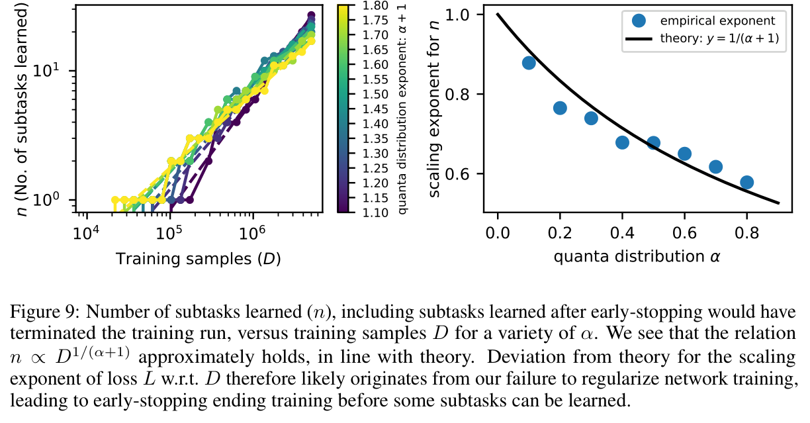
- 步数扩展：我们观察到，\(\alpha_S\) 始终高于理论预测 \(\alpha/(\alpha+1)\)。图 8 中，各子任务收敛所需步数并不精确遵循 \(S_k\propto p_k^{-1}\)，而更接近 \(S_k\propto p_k^{-0.81}\)。这意味着许多子任务比预期收敛更快，产生更陡的 scaling 曲线。
- 数据扩展：我们观察到，\(\alpha\) 较小时，\(\alpha_D\) 明显高于理论预测 \(\alpha/(\alpha+1)\)。我们认为，这可能与图 7 所示提前停止在所有子任务学会之前截断训练有关。图 9 表明，如果纳入提前停止之后才学会的子任务，已学子任务数量 \(n\) 似乎符合理论：\(n\propto D^{1/(\alpha+1)}\)。
更好地理解多任务稀疏奇偶性上幂律扩展的精确性质，是未来一个有趣研究方向。
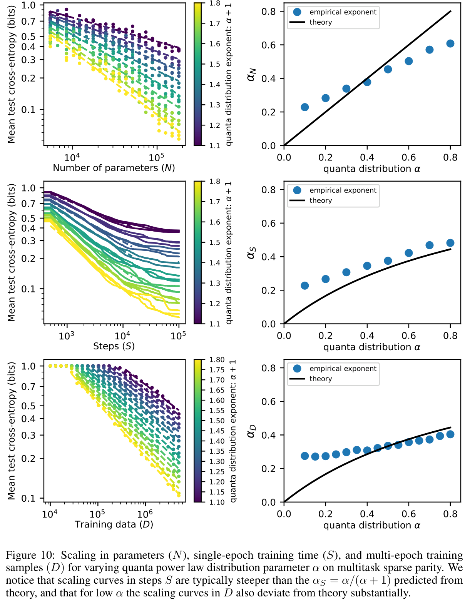
C. 语言模型的补充结果
图 11 展示一次训练运行中，loss 分布如何随时间变化，而非像图 3 那样比较不同模型规模。
图 13 展示 QDG 发现的更多聚类示例。
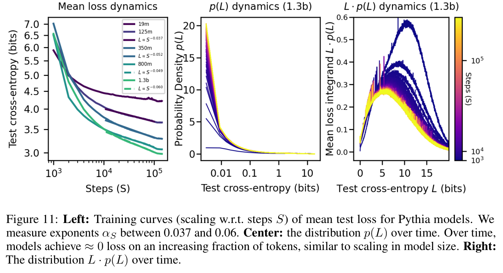
C.1. 将 QDG 应用于 LLM 的细节
将 QDG 用于语言模型时，我们使用 self-attention 和 MLP 层内部的 gradient；把 gradient 展平并拼接为向量 \(g\) 时，不纳入 embed、unembed 或 layer norm 的 gradient。4我们选择 19m 参数模型的交叉熵 loss 小于 0.1 nat 的样本 \((x_i,y_i)\)。采用此筛选标准是因为：（1）如果模型没有在这些样本上正确预测的机制，就无法按模型机制聚类；（2）我们直觉上认为，loss 特别低的样本更可能属于单单元类型。我们进一步排除可通过上下文中的 induction 解决的样本，5因为此类样本很常见（可能干扰寻找多样离散单元的任务），而且早期实验表明 QDG 难以将此类样本聚在一起。我们从 The Pile 测试集选择 10000 个此类样本进行聚类。计算亲和矩阵 \(\widehat C\) 后，采用 scikit-learn [45] 的谱聚类实现，通过 k-means 分配标签。
D. 在 TinyStories 上发现离散单元
我们也将 QDG 用于 TinyStories-33M，它是在 TinyStories 数据集 [46] 上训练的语言模型。我们仅考虑 TinyStories-33M 的交叉熵 loss 小于 1 bit 的 token。对 10000 个此类样本应用 QDG，以谱聚类对其 gradient 聚类，设置 n_clusters = 400。图 14 展示所得聚类中的一些样本。许多聚类反映 TinyStories 数据集中简单的重复模式，例如在“Once upon a”后预测“ time”，许多文档都以此开头。不过，也有更有趣的聚类，例如 Cluster 11：它似乎涉及在句子中预测正确名词，而该名词此前在同一句或前面的句子中已被提及。
4我们排除 embed 和 unembed 参数的 gradient，因为它们维数高，也因为它们可能更多包含输入输出信息，而非模型内部执行的计算。排除 layer norm gradient，是因为在玩具实验中，它们似乎包含较少聚类信息。
5对于待预测 token 是某个此前已在上下文中出现过的 trigram 的最后一个 token 的样本，我们将其排除，以过滤（复制型）induction 问题。这不是十分全面的过滤方案。
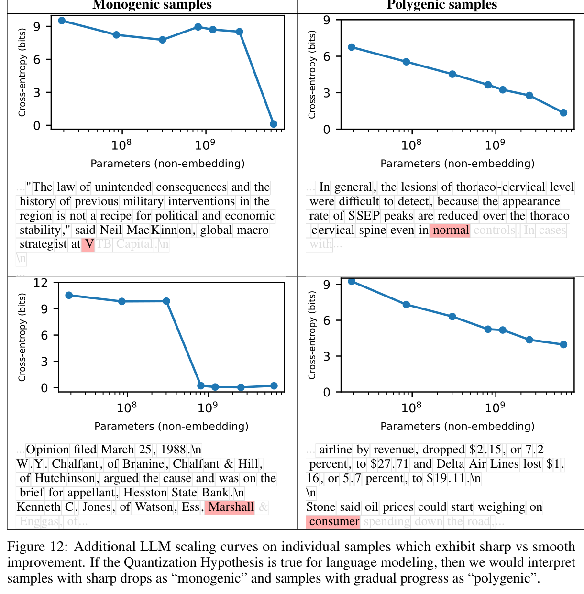
E. 从聚类估计幂律指数的困难
第 5.1 节考察每个簇内元素的分布时，我们未能完美恢复理论预期、指数约为 1.08 的 Zipf 分布。本节描述使用我们的方法准确估计这一指数的困难。
E.1. 多任务稀疏奇偶性上的 QDG
作为第一个实验，我们在多任务稀疏奇偶性上应用 QDG，其中子任务频率服从已知、人工施加的幂律分布。我们在多任务稀疏奇偶性上训练一个宽度 500、单隐层 ReLU MLP，采用 \(\alpha=0.4\)、\(n=100\)、\(k=3\)、\(n_{\mathrm{tasks}}=500\)。随后，取网络 loss 约为零的 10000 个样本（从指数为 1.4 的子任务 Zipf 分布中采样）。对这些样本，计算交叉熵 loss 相对于全部模型参数的 gradient，再像对 LLM 那样执行 QDG。图 15 展示结果。我们绘制完整相似性矩阵，样本按预先已知的子任务排序，而非按 QDG 聚类排序，可以看到清晰模式：同一子任务的元素，平均角相似性高于不同子任务之间的元素。然而，从聚类的秩频图中，我们恢复出的斜率并非 -1.4，而是较低的约 -1.1。这表明，即使输入可以精确分解为子任务，且这些子任务服从已知 Zipf 分布，QDG 也无法完美恢复这一 Zipf 分布。（本句接原文第 20 页。）
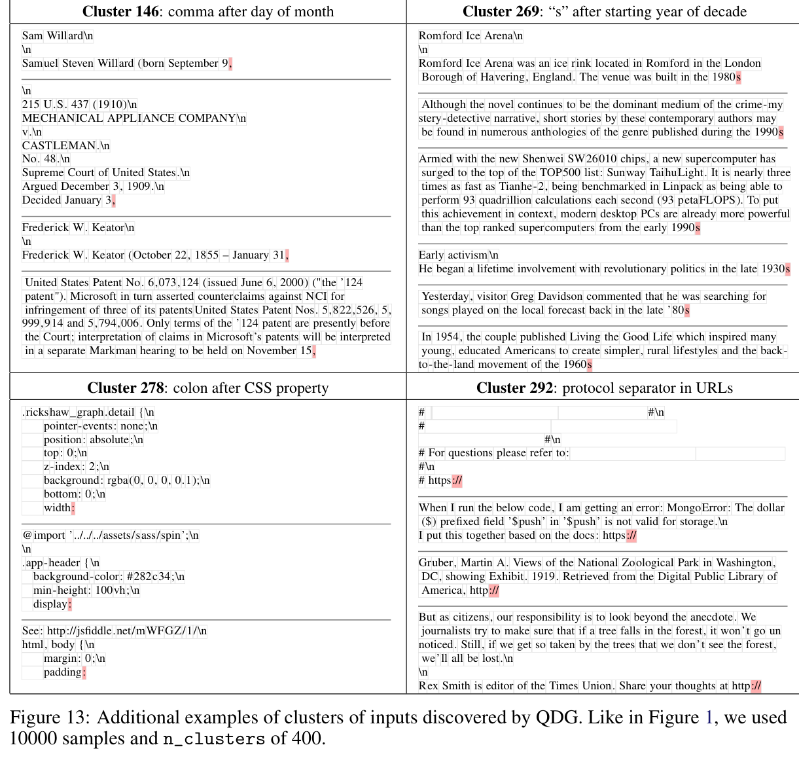
本页开头关于 QDG 无法精确恢复 Zipf 分布的跨页句子已接续于上一页译出。
E.2. QDG 不确定性与偏差的玩具模型
玩具模型：为理解谱聚类的偏差，我们建立以下玩具模型。假设数据集有 \(N=1000\) 个子任务，每个子任务包含 \(n_i=\lfloor A/i^\alpha\rfloor\) 个 token（\(1\leq i\leq N\)），其中 \(A=1000\)。用高斯分布 \(\mathcal N(m_i,\sigma^2I_{d\times d})\) 建模子任务 \(i\) 内部的 gradient，其中 \(d\) 为 embedding 维数，\(\sigma\) 为噪声水平，\(m_i\) 为高斯均值。\(m_i\) 本身从标准高斯分布采样：\(m_i\sim\mathcal N(0,I_{d\times d})\)。定义两个向量 \(x,y\) 的相似度为 \(\mathrm{sim}\equiv1+\frac{x}{|x|}\cdot\frac{y}{|y|}\)。计算全部 \(\sum_{i=1}^Nn_i\) 个 token 之间的两两相似度，并把相似性矩阵输入谱聚类算法。我们还需要指定簇数 \(k\)。
玩具模型有两个超参数：embedding 维数 \(d\) 和噪声水平 \(\sigma\)。需要确定它们，使玩具模型能够较好地模仿 LLM 结果（图 5）。固定 \(\alpha=1\)，扫描 \(d\in\{30,100,1000\}\)、\(\sigma\in\{0,0.5,2.0\}\) 和 \(k\in\{100,200,500\}\)。如图 16 所示，高维（\(d=1000\)）、大噪声（\(\sigma=2.0\)）设置似乎与 LLM 结果最一致，因为 \(k=200\) 曲线能重现 LLM 曲线中的下凹与断崖。
从频率曲线估计 \(\alpha\) 很困难，实际上，斜率依赖 \(k\) 及所选估计区间。不过，我们观察到，不同 \(k\) 的曲线构成清晰包络，其斜率在相当宽的区间内稳健。包络斜率似乎能指示 \(\alpha\)。我们固定 \(d=1000\)、\(\sigma=2.0\)，扫描 \(\alpha\in\{0.8,0.9,1.0,1.1,1.2,1.3,1.4,1.5\}\)。对每个 \(\alpha\)，估计包络斜率。虽然估计的包络与 \(\alpha\) 明显相关，用包络斜率估计 \(\alpha\) 的误差仍约为 0.2，见图 17。（本段接原文第 21 页。）
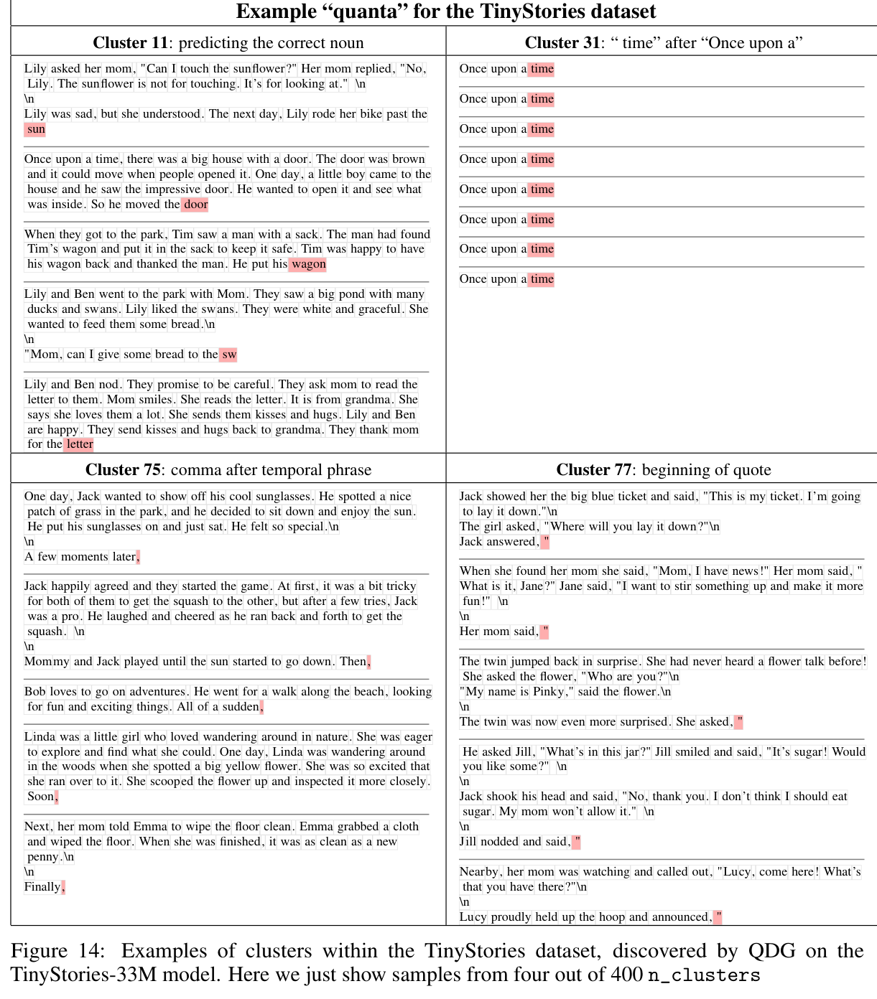
本页关于包络斜率估计的跨页段落已接续于上一页译出。
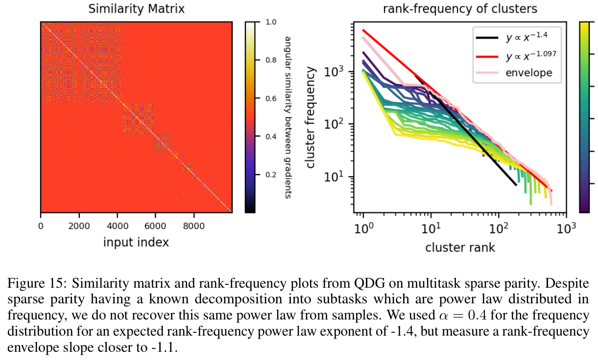
F. 不同研究中的参数与数据 scaling 指数
图 18 展示 Villalobos [47] 汇编的多项深度学习 scaling 研究中的 \(\alpha_N\) 和 \(\alpha_D\)（或 \(\alpha_S\)，取决于研究）。虽然数据较为杂乱，但一个有趣现象是，Rosenfeld et al. [2] 的多数样本位于 \(\alpha_D=\alpha_N\) 直线下方，正如模型所预测。Hoffmann et al. [7] 的 scaling 指数，相比其他神经 scaling laws 模型提出的关系 \(\alpha_D=\alpha_N\)，略更接近我们的预测。不过，整体而言，现有经验结果仍太杂乱，无法明确支持或反驳我们的模型。
G. 实验所用计算量的估计
多任务稀疏奇偶性：我们的训练脚本在 GPU 上执行一次单 epoch 训练约需 1–4 小时，取决于网络规模。在固定数据集上进行多 epoch 训练时，运行通常需要 3–10 分钟，少数 outlier 要长得多。最大的实验是图 10：在具有不同子任务分布（不同幂律指数）的数据上训练不同宽度网络。完成了 467 次运行，总运行时间约 1450 小时。这些实验在异构硬件集群上进行，可用 GPU 包括 NVIDIA A100、RTXA6000、QUADRORTX6000、GEFORCERTX2080TI、GEFORCERTX2080、GEFORCEGTX1080TI、titan-x 和 tesla-v100。
Pythia 模型 scaling 评测：我们在 NVIDIA A100 80GB 上评测 Pythia 模型。目前没有计算约 1000 万 token 的 loss 所用的运行时间记录（我们据此报告 scaling 统计量），不过每个模型很可能不到一小时。成本最高的实验是图 11：对 Pythia 套件前四个模型的 143 个 checkpoint 进行评测，共 572 次。我们很可能为此使用了数百 A100 小时，不过也可能少于 100 小时。
QDG：我们在 NVIDIA A100 80GB 上执行 QDG 实验。对于最小 Pythia 模型和 10000 个样本，计算相似性矩阵需要几小时。我们只进行过少数几次这一计算。
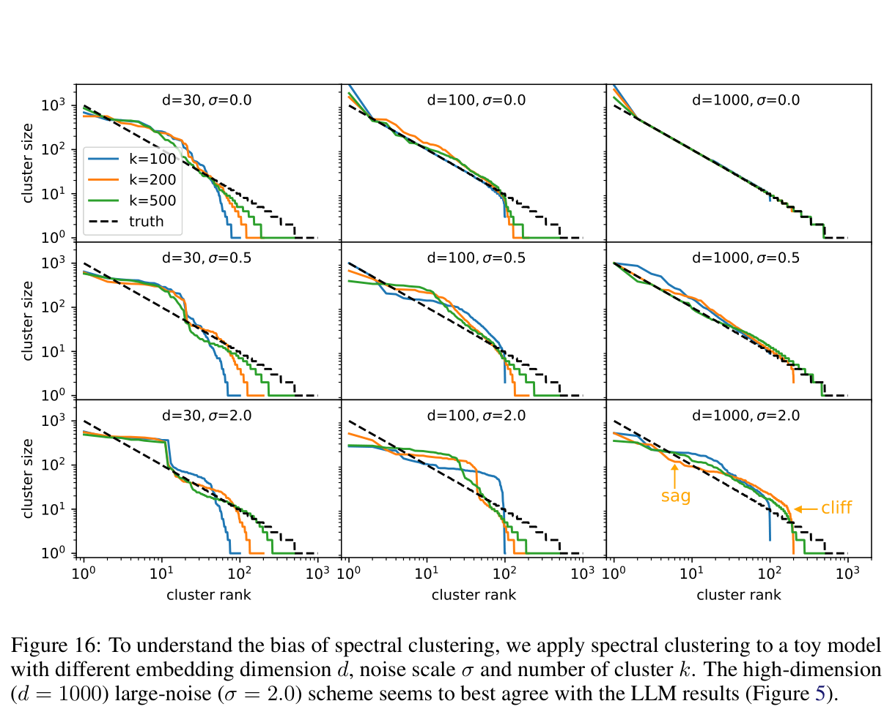
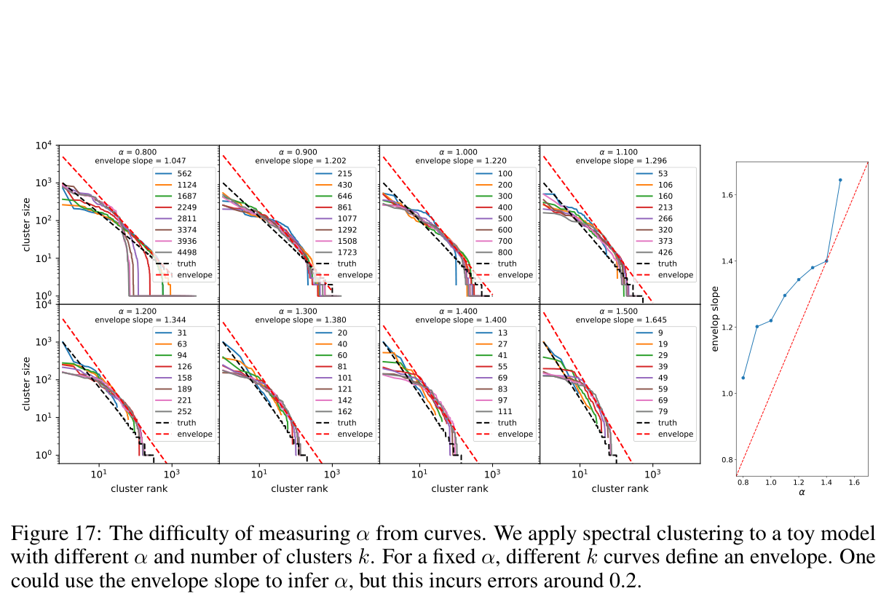
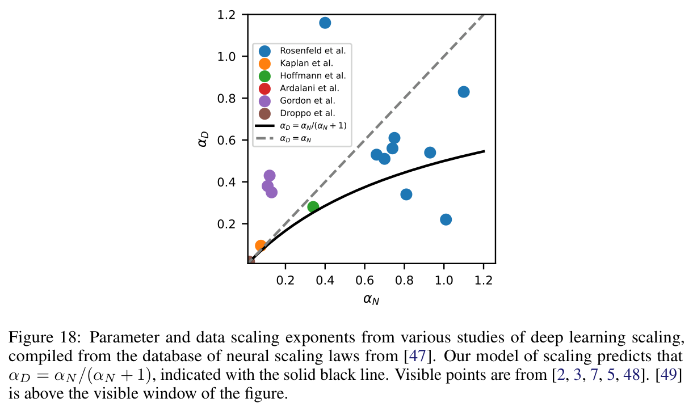